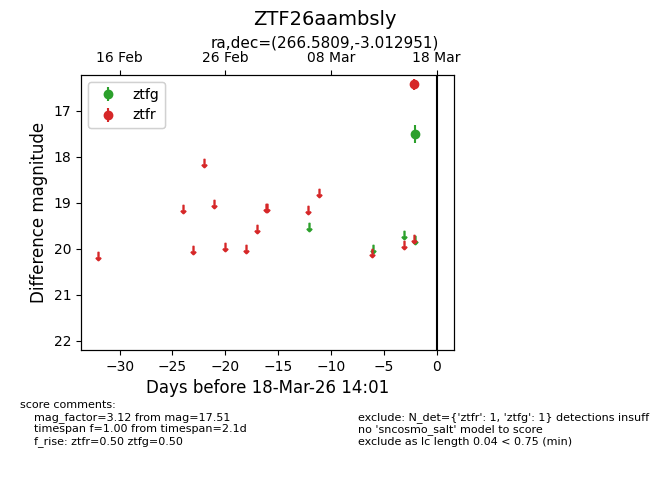
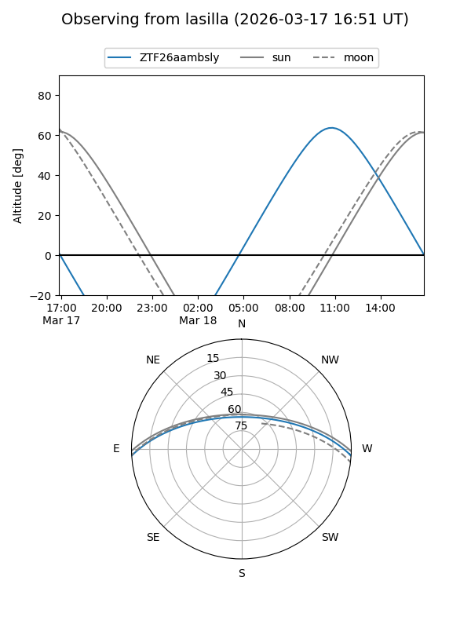
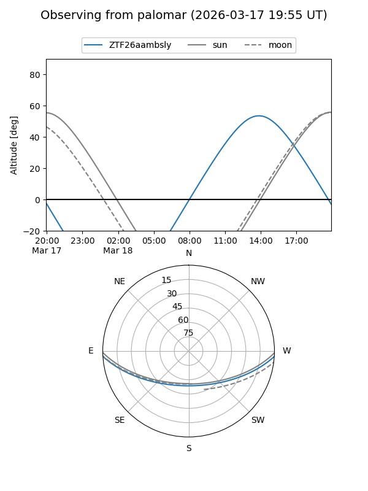

ZTF26aambsly
Target ZTF26aambsly at 2026-03-18 14:03
Aliases and brokers:
FINK: link
Lasair: link
ALeRCE: link
alt names
ZTF26aambsly (ztf,fink_ztf)
Coordinates:
equatorial (ra, dec) = 266.5809,-3.01295
equatorial (HMS+DMS) = 17:46:19.42,-03:00:46.62
galactic (l, b) = (22.6195,+13.01219)
Flags:
Photometry:
last ztfg=17.51, ztfr=16.43
1 ztfg, 1 ztfr detections
Lightcurve

Visibility


Additional plots